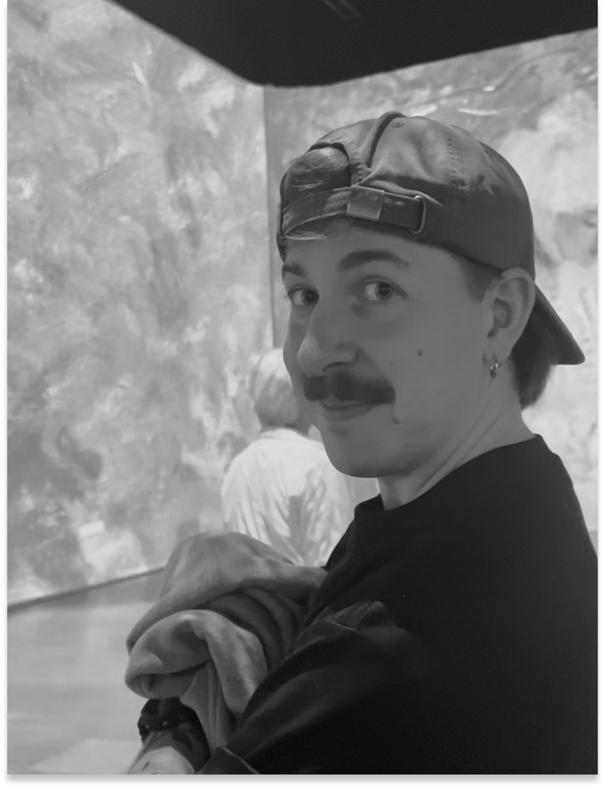
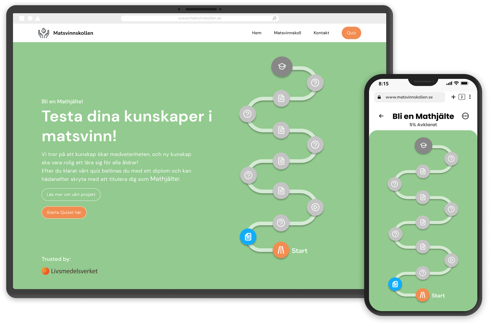

UX designer curious about systems and player behavior.
I work with interaction flows, UI structure, and research to make things feel clear, playable, and grounded.

Selected Work

Hack and Slash – School Project at Futuregames
A fast-paced action office game where players uncover villainy of price-hacking.

Case Study – Design suggestion for Anno Pax Romana
A UI redesign suggestion for Anno Pax Romana focused on systems hierarchy and streamlining.

Matsvinskollen – Food Waste Awareness App
A gamified quiz prototype designed to educate individuals about food waste.

Project Trash – Arcade Game at Futuregames
An arcade game built with a green theme in mind, created collaboratively with a team of 14.
About Me
Hey, I'm Charlie. I work with Game UI/UX, but I tend to think in systems and production as much as pixels.
I've studied anthropology, built games, designed interfaces, and somewhere along the way realized I like connecting the dots between people, mechanics, and structure. I'm comfortable jumping between research, UI, playtesting, and backlog discussions if that's what helps the team move forward.
I've also noticed that I naturally step into a producer mindset. I care about having a clear direction, making sure everyone understands the goal, and reducing unnecessary friction in the process. Not by controlling things, but by creating clarity.
At the same time, I'm genuinely curious about players. I like watching how people interact, where they hesitate, what confuses them, and what makes things click. That's usually where the real design decisions happen.
Right now I'm specializing in Game UI/UX at Futuregames, focusing on building interfaces that feel readable, responsive, and grounded in how games actually work.
Special Skills
Systems Design
I structure UI with clear hierarchy and reusable components, so teams can build consistently without reinventing patterns.
Prototyping
I prototype early and often, from rough flows to interactive mockups, to test pacing, feedback, and clarity before production.
User Research
I run playtests, observe friction points, and turn real player behavior into design adjustments instead of assumptions. I truly enjoy learning from people, to go into different perspectives.